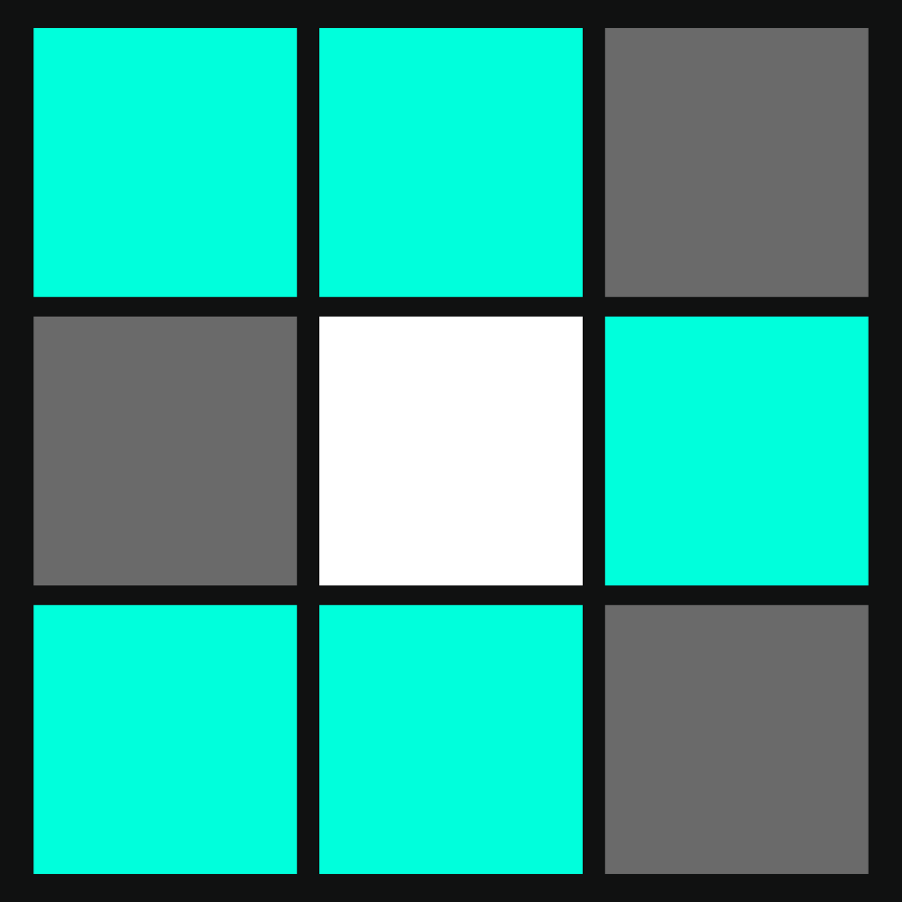
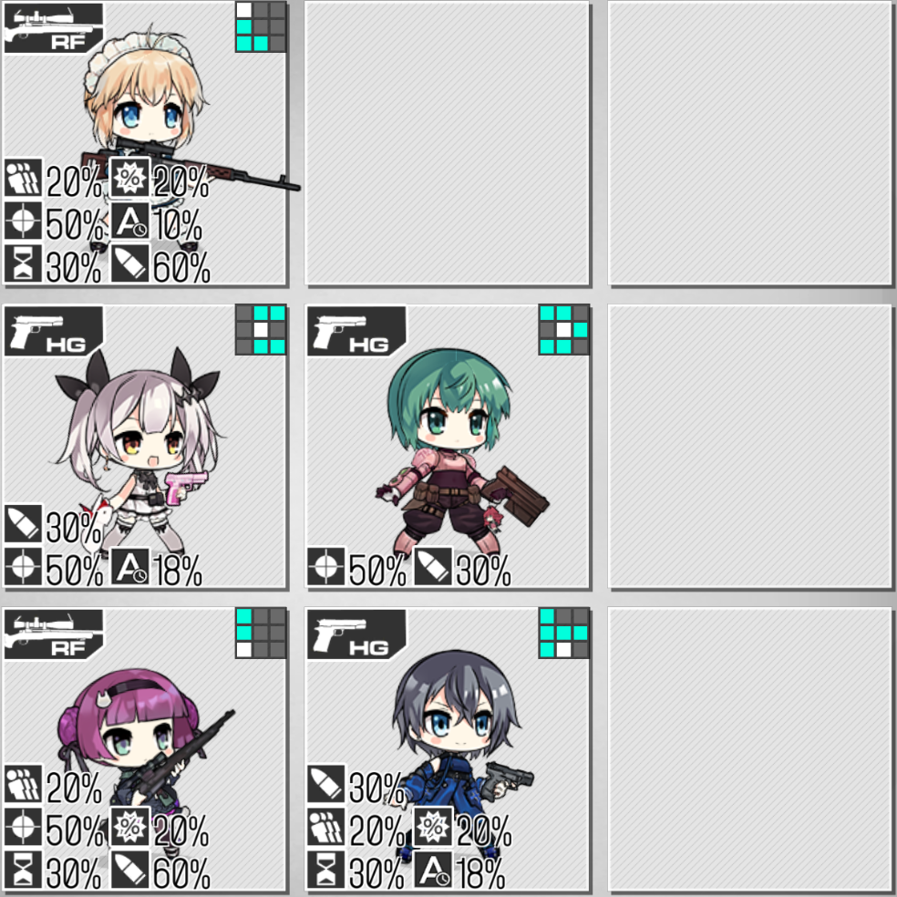
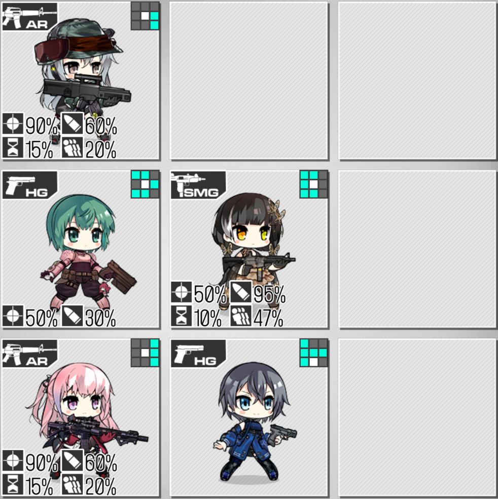

This is part of a series covering the VA-11 Hall-A dolls. You can go back to the overview here.
Introduction#
White Knight's Shield ICD 6s/CD 10s
Grant ally SGs, SMGs, HGs, and Fairies a shield with a base HP of 32 points for 5 seconds. The shield gains additional HP based on the target's missing HP, with the minimum increase being 0.8x and the maximum being 1.8x.
When Stella is present, Sei's attacks count towards Stella's passive skill.
Favorite Drink: When buffed by a Moonblast, skill takes effect for the duration of the Moonblast, and the additional shield HP gain based upon the target's missing HP is doubled.

Functional Details#
Sei's shield goes from 1x+0.8-1.8x, or 1.8-2.8 times the 32 base HP, or a 57-89 HP shield to your SMGs/SGs/HGs/fairies. This does include Taunt/Twin fairies. As these are already single-link HP slabs you don't care much about, it's nothing that important. She shields your typical tanking/frontline units, but offers no protection for your DPS units (outside of 5HG echelons).
For comparison:
- P22 offers 53 shield HP to anything in the front column, plus 60% EVA if you can keep them between that and the middle.
- HS2000 gives 42 shield HP to all allies.
- Rex Zero 1 gives 32 shield HP to the echelon leader.
- SAT8 gives 35 shield HP to anything in the front column, with a 2 s ICD.
- M500 mod gives 25 shield HP to anything in her column, whenever she receives a buff, 3 stacks max.
- Shield fairy gives all units a shield with strength equal to their single-link HP (~200 HP on SMGs, ~70 HP on HGs), with a respectable net damage buff.
All three HGs mentioned have at least some offensive buffs as part of their skill, unlike Sei.
Sei's tiles are exactly the same as Grizzly's. She can reasonably go on positions 4 or 5 in standard RFHGs.
Historical Uses#
- Sei was a popular pick in a certain Theater 5/6 CE-stacked clear team. Rico/Grape/Five-Seven/P22/Sei/Taunt was one possible configuration. While CE was (of course) the primary concern, her shields were nice for covering scratch damage.
- HP shields are helpful in P22's Isomer EX farming map. HS2000 is ideal, but Sei was a functional cope option.
Conclusion#
Sei was originally notable for being the first HG to offer HP shields on EN. However, her limitations within that role (partial coverage) and lack of buffs make her unremarkable now that our options have expanded.
I would ultimately put Sei on the lower end of her niche: HP shielding HG. HS2000/P22/Rex Zero are usually superior shield HGs for their flexibility and additional buffs, even if their shield values are a little lower. In general content, killing enemies faster with a straight buffer like Grizzly/M950A will probably mitigate more damage than a one-time shield.
Optional.
Minor Notes#
Example Echelons#
Standard disclaimer: teams should be built as needed according to the circumstances of specific maps and enemies. Do not blindly copy-and-paste teams. With that in mind, here are some not-entirely-awful ideas to illustrate where Sei can be used.

